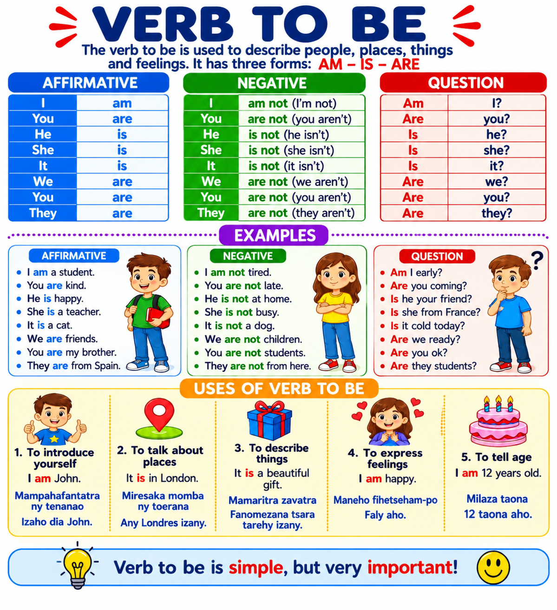

CONJUGATION – VERB TO BE
FANONDRIKODINANA – MATIATENY TO BE

ENGLISH
- Explanation of how to use the verb to be.
- Examples of how to use the verb to be.
- Read everything and repeat twice after listening.
MALAGASY – TENY MALAGASY
- Fanazavana ny fomba fampiasana ny matoanteny to be.
- Ohatra amin’ny fampiasana ny matoanteny to be.
- Vakio avokoa ary avereno indroa rehefa avy mihaino.